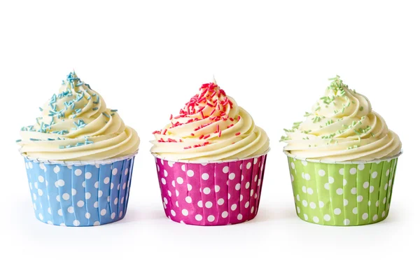
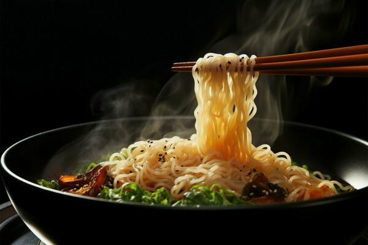
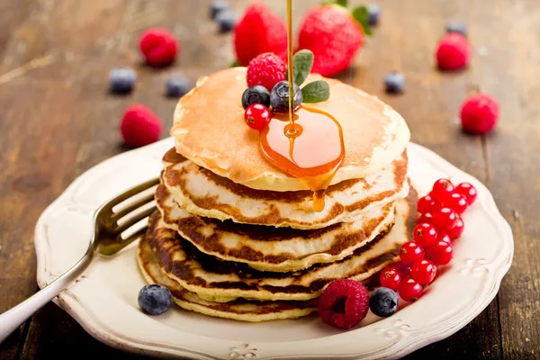
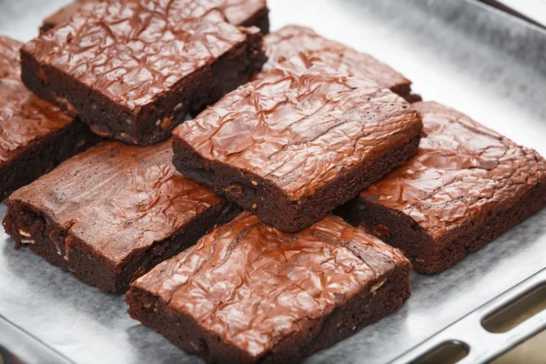

Food Variety
Popular Meals
Fish
Cake
Chicken
Gallery
Fried Chicken
Fried chicken, sometimes referred to as Southern fried chicken, is a dish made of chicken pieces that have been air, pressure, pan, or deep-fried after being coated in seasoned flour or batter. While keeping the liquids in the meat, the breading gives the chicken's outside a crispy coating or crust.
Cupcakes
Cupcakes are delicious little snack cakes that are popular because they are portable and allow for portion control. These are batter cakes baked in temperature-resistant paper or foil cups. Cupcakes can be made using a range of recipes and adorned with frostings and cream.
Noodles
A cooked paste made of eggs and flour that is common in Asian and European cuisine; it can be easily identified from pasta by its long, ribbon-like shape. It's usual practice to utilise noodles to give broth soups more body and flavour. They are frequently baked in casseroles, boiled, sautéed, and served with meats and sauces.
Pancakes
A pancake, also known as a hotcake, griddlecake or flapjack, is a type of flat, frequently round and thin cake that is made using a starch-based batter that may also include eggs, milk and butter. It is baked on a hot griddle or frying pan. It's a kind of bread with batter.

Burger
A grilled ground beef patty sandwiched between two bun halves is called a burger. Flavour is added by slicing in raw onion, lettuce, bacon, mayonnaise, and other things. Despite being widely consumed worldwide, burgers are still seen as an American dish. Teriyaki burgers are a popular food in Japan.
Brownies
Brownies can taste like simple chocolate or like fudgy brownies. Again, some people like them better than others. Recall that the brownie was in fact invented by dramatically lowering the chocolate cookie's wheat content.
Sign Me Up
Be first to know about new products
CodeAndCreate © All Rights Reserved